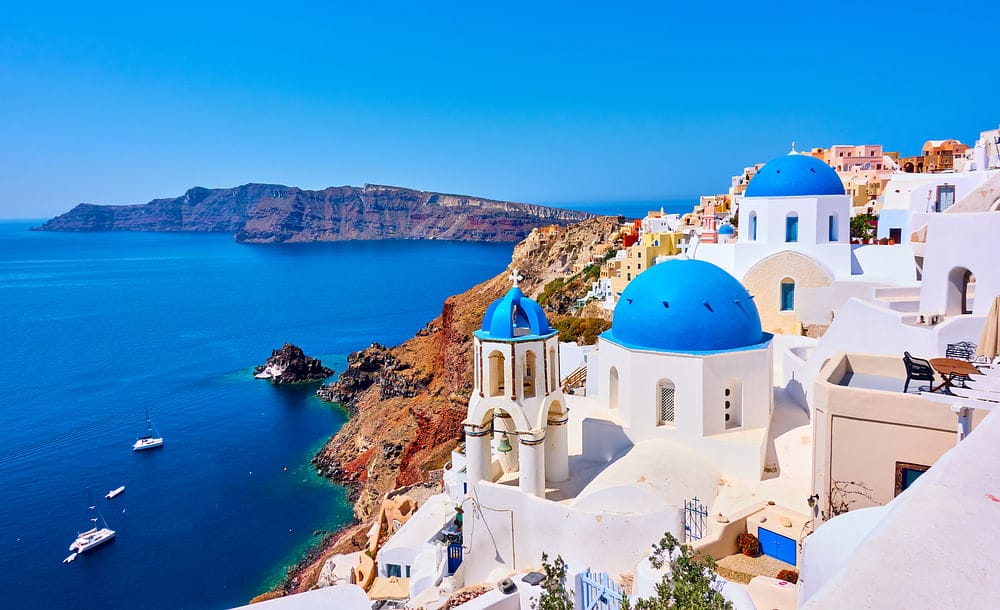

GREECE

Greece,[a] officially the Hellenic Republic,[b] is a country in Southeast Europe, situated on the southern tip of the Balkan peninsula. Greece shares land borders with Albania to the northwest, North Macedonia and Bulgaria to the north, and Turkey to the east. The Aegean Sea lies to the east of the mainland, the Ionian Sea to the west, and the Sea of Crete and the Mediterranean Sea to the south. Greece has the longest coastline on the Mediterranean Basin, featuring thousands of islands. The country consists of nine traditional geographic regions, and has a population of approximately 10.5 million. Athens is the nation's capital and largest city, followed by Thessaloniki and Patras.
Greece is considered the cradle of Western civilization, being the birthplace of democracy, Western philosophy, Western literature, historiography, political science, major scientific and mathematical principles, theatre and the Olympic Games. From the eighth century BC, the Greeks were organised into various independent city-states, known as poleis (singular polis), which spanned the Mediterranean and the Black Sea. Philip II of Macedon united most of present-day Greece in the fourth century BC, with his son Alexander the Great rapidly conquering much of the known ancient world, from the eastern Mediterranean to northwestern India. The subsequent Hellenistic period saw the height of Greek culture and influence in antiquity. Greece was annexed by Rome in the second century BC, becoming an integral part of the Roman Empire and its continuation, the Byzantine Empire, which was culturally and linguistically predominantly Greek. The Greek Orthodox Church, which emerged in the first century AD, helped shape modern Greek identity and transmitted Greek traditions to the wider Orthodox world. After falling under Ottoman rule in the mid-15th century, Greece emerged as a modern nation state in 1830 following a war of independence.
Name
The native name of the country in Modern Greek is Ελλάδα (Elládai, pronounced [eˈlaða]). The corresponding form in Ancient Greek and conservative formal Modern Greek (Katharevousa) is Ἑλλάς (Hellas, classical: [hel.lás], modern: [eˈlas]). This is the source of the English alternative name Hellas, which is mostly found in archaic or poetic contexts today. The Greek adjectival form ελληνικός (ellinikos, [eliniˈkos]) is sometimes also translated as Hellenic and is often rendered in this way in the formal names of Greek institutions, as in the official name of the Greek state, the Hellenic Republic (Ελληνική Δημοκρατία, [eliniˈci ðimokraˈti.a]).[11]
Premodern history
The oldest remains of humans in Greece is a well-preserved skull of Homo heidelbergensis from Petralona Cave in Macedonia, dating to around 250–300,000 years ago, though the estimates are highly [15] The Apidima Cave in Mani, in southern Greece, has been suggested to contain the oldest remains of anatomically modern humans outside of Africa, dated to 210,000 years ago. [16] However, this has been contested, with other authors suggesting the remains represent archaic humans. [17] All three stages of the Stone Age (Paleolithic, Mesolithic, and Neolithic) are represented in Greece, for example in the Franchthi Cave. [18] Neolithic settlements in Greece, dating from the 7th millennium BC, [19] are the oldest in Europe by several centuries, as Greece lies on the route via which farming spread from the Near East to europe [20] Greece is home to the first advanced civilizations in Europe and is considered the birthplace of Western civilisation, [21][22] beginning with the Cycladic civilization on the islands of the Aegean Sea at around 3200 BC,[23] the Minoan civilization in Crete (2700–1500 BC), [24][25] and then the Mycenaean civilization on the mainland (1600–1100 BC). [25]
Untitled Greek Parable
onslaughts of parasitic butterflies devour her liver each eve
sparing just enough to grow back the next day
her night clothes are torn under razor beaks
then mended each morning by the nimble-fingered Narcissi
who do not lament her predicament,
but sing mellow little tunes in C minor,
a statement: there is no latent compassion for Pandora
Archaic and Classical period
The end of the Dark Ages is traditionally dated to 776 BC, the year of the first Olympic Games.[29] The Iliad and the Odyssey, the foundational texts of Western literature, are believed to have been composed by Homer in the 7th or 8th centuries BC.[30][31] With the end of the Dark Ages, there emerged various kingdoms and city-states across the Greek peninsula, which spread to the shores of the Black Sea, Southern Italy (the so-called "Magna Graecia") and Asia Minor. These states and their colonies reached great levels of prosperity that resulted in an unprecedented cultural boom, that of classical Greece, expressed in architecture, drama, science, mathematics and philosophy. In 508 BC, Cleisthenes instituted the world's first democratic system of government in Athens.[32][33]

Greece your dream place
Geography
Located in Southern[149] and Southeast Europe,[150] Greece consists of a mountainous, peninsular mainland jutting out into the sea at the southern end of the Balkans, ending at the Peloponnese peninsula (separated from the mainland by the canal of the Isthmus of Corinth) and strategically located at the crossroads of Europe, Asia, and Africa.[d] Due to its highly indented coastline and numerous islands, Greece has the 11th longest coastline in the world with 13,676 km (8,498 mi);[156] its land boundary is 1,160 km (721 mi). The country lies approximately between latitudes 34° and 42° N, and longitudes 19° and 30° E, with the extreme points being:[15
- North: Ormeniovillage
- South: Gavdos island
- East: Strongyli (Kastelorizo, Megisti) island
- West: Othonoiisland
Military
The Hellenic Armed Forces are overseen by the Hellenic National Defense General Staff (Greek: Γενικό Επιτελείο Εθνικής Άμυνας – ΓΕΕΘΑ), with civilian authority vested in the Ministry of National Defence. It consists of three branches:[203]
- Hellenic Army (Ellinikos Stratos, ES)
- First Balkan War
- Second Balkan War
- Hellenic Navy (Elliniko Polemiko Navtiko, EPN)
- Frigate Command
- Fast Attack Craft Command
- Hellenic Air Force (Elliniki Polemiki Aeroporia, EPA)